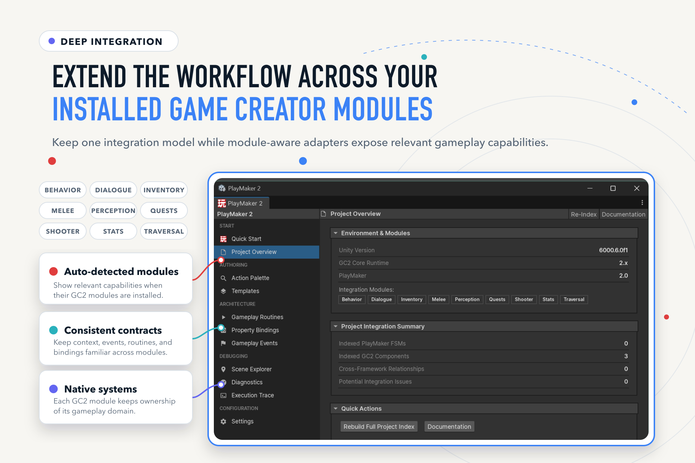
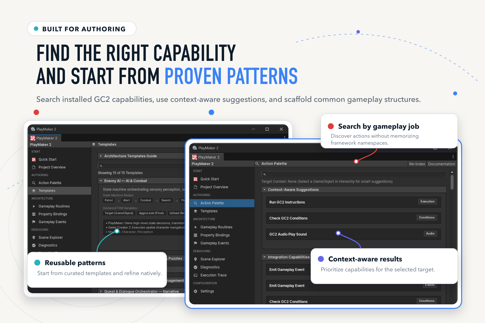
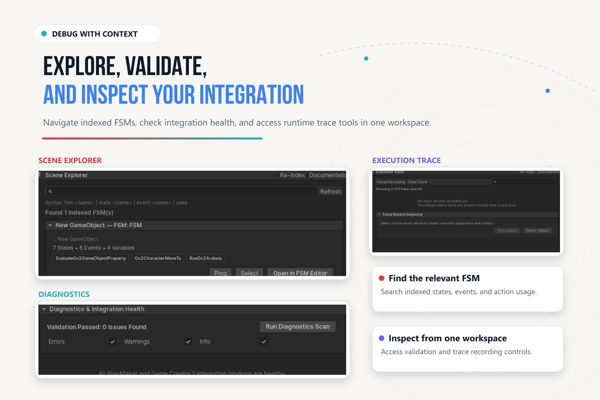

Integration Workspace#
Open Game Creator > PlayMaker 2 or PlayMaker > Game Creator 2. The workspace brings authoring, discovery, validation, and runtime inspection into one window.
Find Your Way Around#
| Section | Page | Use it for |
|---|---|---|
| Start | Quick Start | Orientation and workflow entry points. |
| Start | Project Overview | Environment, installed modules, integration summary, and quick actions. |
| Authoring | Action Palette | Search capabilities and context-aware suggestions. |
| Authoring | Templates | Inspect and scaffold architecture patterns. |
| Architecture | Gameplay Routines | Discover and inspect reusable routine assets. |
| Architecture | Property Bindings | Inspect configured data connections. |
| Architecture | Gameplay Events | Discover typed event assets and endpoints. |
| Debugging | Scene Explorer | Search indexed FSMs, states, events, variables, and action usages. |
| Debugging | Diagnostics | Scan integration health and inspect issues. |
| Debugging | Execution Trace | Record and inspect bridge operations in Play Mode. |
| Configuration | Settings | Execution, diagnostics, variables, Signals, and Singletons. |

Discover an Action or Pattern#
- Select the gameplay GameObject in the Hierarchy.
- Open Action Palette and search for the job: run gameplay, evaluate a condition, read a property, or send an event.
- Inspect context-aware suggestions and available capabilities. Module entries depend on installed modules.
- Use Templates for a starting state structure. Review generated states, variables, references, and transitions in the native editors before running it.

Inspect Relationships#
Use Scene Explorer to find indexed FSMs and their action usages. Search supports the displayed prefixes, including fsm:, state:, event:, and uses:. Use Ping, Select, or Open in FSM Editor to inspect the actual object.
Use Re-Index after major imports or when the summary is stale. The index discovers authored relationships; dynamic targets still need Play Mode verification.
Diagnose a Runtime Connection#
- Open Diagnostics and run the scan. Address unresolved targets, missing identifiers, and incompatible data pairings.
- Open Execution Trace, enable recording if paused, and enter Play Mode.
- Reproduce one interaction, then pause recording to inspect its records.
- Inspect the operation, outcome, context, and associated object. Navigate to the failing component.
- Clear the trace and repeat after correcting the configuration.

Before Shipping#
Run diagnostics after refactors, inspect missing selector entries, and exercise scenes in Play Mode and a representative player build. A clean authoring scan does not prove every dynamic target or optional module path resolves at runtime.
See Troubleshooting and Compatibility for validation limits.